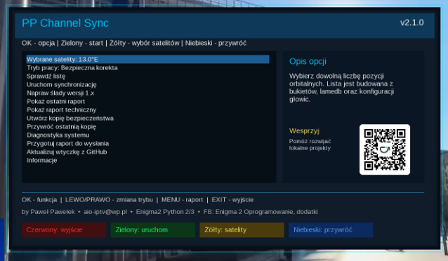

Witam na mojej stronie Paweł Pawełek
Zbiorcza aktualizacja naprawcza • wiele satelitów
PP Channel Sync 2.1.0
Wersja 2.1.0 obejmuje wszystkie poprawki wprowadzone po zgłoszeniach użytkowników. Wtyczka ponownie działa zgodnie z głównym założeniem: analizuje listę znajdującą się na tunerze, poprawia zmienione parametry kanałów i dopisuje wykryte nowości do odpowiednich bukietów bez niszczenia układu użytkownika.

✅ Zbiorcza aktualizacja naprawcza
Bazy i paczki kontrolne
- pełna obsługa baz lamedb oraz lamedb5
- poprawione pobieranie właściwych list kanałów zamiast błędnych paczek
- odrzucanie pustych, uszkodzonych i niezgodnych paczek
- obsługa list umieszczonych w dodatkowych oraz zagnieżdżonych archiwach
- każda paczka jest sprawdzana przed rozpoczęciem zmian w liście użytkownika
Synchronizacja wielu satelitów
- poprawiona synchronizacja kilku zaznaczonych satelitów podczas jednej operacji
- każda wybrana pozycja orbitalna jest analizowana osobno
- naprawione wykrywanie satelitów z list kanałów, bazy Enigma2 i konfiguracji głowic
- przebudowany i czytelniejszy wybór wielu satelitów
- usunięto problem technicznych wpisów typu
2140:820000...
Nowe kanały i zachowanie bukietów
- nowe kanały są dopisywane na końcu właściwego bukietu
- przywrócono separator „nowe kanały – PP Channel Sync”
- przywrócono datę wykonanej korekty oraz podpis @ PP Channel Sync na dole listy bukietów
- kolejne uruchomienie nie dubluje kanałów, separatorów ani wpisów informacyjnych
- poprawione kanały zachowują dotychczasową kolejność w bukietach
- układ i nazwy bukietów użytkownika pozostają zachowane
Bezpieczeństwo korekty
PP Channel Sync nie instaluje całkowicie nowej listy. Wykonuje kontrolowaną korektę już istniejącej konfiguracji Enigma2.
- nie ingeruje w DVB-T, DVB-C ani pozycje IPTV
- przed zmianami wykonywana jest kopia bezpieczeństwa
- zapis jest wykonywany dopiero po poprawnej analizie danych kontrolnych
- w przypadku przerwania zapisu lista jest automatycznie przywracana z kopii
- rozszerzono raporty i diagnostykę błędów
- naprawiono restart GUI występujący po wyjściu z ekranu wyboru satelitów
Nowy interfejs i obsługa
- Naciśnij żółty przycisk, aby wybrać jedną lub kilka pozycji orbitalnych.
- Ustaw tryb pracy i sprawdź pozostałe opcje korekty.
- Naciśnij zielony przycisk, aby uruchomić analizę i bezpieczną korektę.
- Po zakończeniu otwórz raport i sprawdź podsumowanie wykonanych zmian.
Zdjęcie wtyczki
Aktualizacja i instalacja
Aktualizację można wykonać bezpośrednio z poziomu wtyczki. PP Channel Sync jest również dostępny do instalacji z poziomu AIO Panel.
wget -q -O - https://raw.githubusercontent.com/OliOli2013/PPChannelSync-Plugin/main/installer.sh | /bin/shPo instalacji zalecany jest restart interfejsu Enigma2.
opkg install --force-reinstall /tmp/enigma2-plugin-extensions-ppchannelsync_2.1.0_all.ipkInformacje
Wersja: 2.1.0
System: Enigma2 Python 2/3
Autor: by Paweł Pawełek
Kontakt: aio-iptv@wp.pl